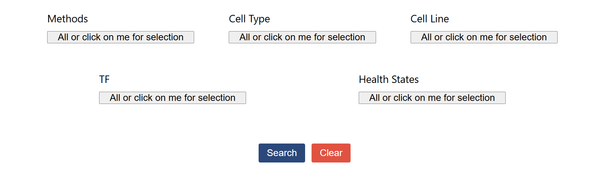
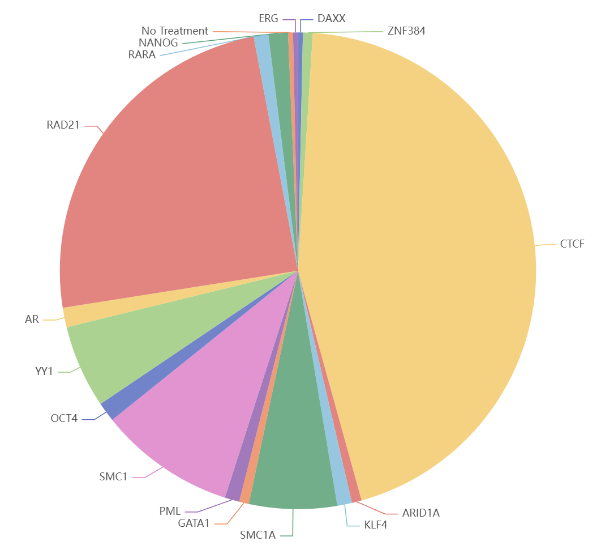
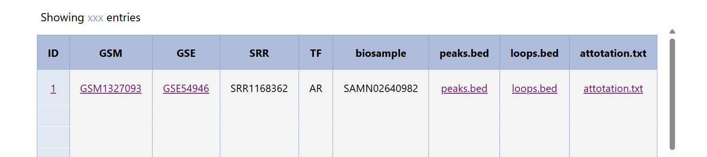
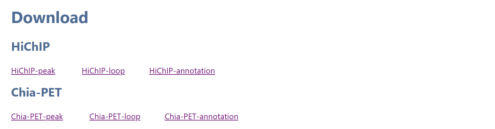

Here, we demonstrate how to obtain samples that meet the criteria using our search and filter functions.
◆Users can enter a GSM or GSE number in the input box and click the "Search" button. The retrieved data will be displayed in the table below. Clicking on the GSE or GSM number in the table will redirect to the corresponding GEO page for the sample. Clicking on peaks.bed, loops.bed, or annotation.txt will download the respective files. Clicking on the sample ID will navigate to the sample's detail page.
◆Users can select the data that meets their requirements in the filter box. We have divided the filter criteria into five categories: Methods, Cell Type, Cell Line, TF, and Health states. Each filter box allows for multiple selections. After making selections, users need to click the "Done" button below. If no selection is made in a filter box, all options are selected by default. At any point during the selection process, users can click "Clear" to reset all options to their default state. After completing the selections in all five filter boxes, users can click the "Search" button. Data that meets the criteria will be displayed in the table below. The distribution of the samples meeting the criteria across these five categories will be displayed in a pie chart.
 To access and download the data files for HiChIP and ChIA-PET, please visit the Download page. There, you will find links to compressed archives for each data type.
HiChIP: Peak, Loop, and Annotation data
ChIA-PET: Peak, Loop, and Annotation data
◆ chrom: Chromosome name
◆ chromStart: Start position of the feature
◆ chromEnd: End position of the feature
◆ name: Feature name
◆ score: Numerical score representing feature significance or intensity
◆ First 6 fields: Represent interacting bins for retained interactions after merge filtering.
◆ Next 3 fields: Indicate contact count, p-value, and q-value for these interactions.
◆ bin1_low & bin1_high: Define the lower and upper coordinates of the first set of interacting bins.
◆ bin2_low & bin2_high: Define the lower and upper coordinates of the second set of bins.
◆ sumCC: The total contact counts of significant interactions in the connected component model.
◆ StrongConn: A value between 0 and 1, representing the fraction of significant interactions in the connected component.
◆ chrom: Chromosome name.
◆ summit start: Start coordinate of the peak summit.
◆ summit end: End coordinate of the peak summit.
◆ peak coverage: Maximum tag coverage within the peak.
◆ p-value: Statistical significance based on Poisson distribution.
◆ p.adjust: Adjusted p-value using the Benjamini-Hochberg method for multiple testing.
◆ chrom1: Chromosome of cluster anchor 1.
◆ start1: Start coordinate of cluster anchor 1.
◆ end1: End coordinate of cluster anchor 1.
◆ chrom2: Chromosome of cluster anchor 2.
◆ start2: Start coordinate of cluster anchor 2.
◆ end2: End coordinate of cluster anchor 2.
◆ ipet count: Number of PETs linking anchors 1 and 2.
◆ type: Interaction type (1 = intra-chromosomal, 0 = inter-chromosomal).
◆ distance: Distance between anchors for intra-chromosomal interactions; set to 2,147,483,647 for inter-chromosomal.
◆ tag count within anchor 1: Tags within anchor 1.
◆ tag count within anchor 2: Tags within anchor 2.
◆ p-value: Statistical significance of interaction (hyper-geometric distribution).
◆ p.adjust: Adjusted p-value using Benjamini-Hochberg method.
◆ -log10(p-value): Negative logarithm of p-value.
◆ -log10(p.adjust): Negative logarithm of adjusted p-value.
◆ 1-3 columns: Anchor1 The start and end positions of anchor1 on the chromosome, derived from processed data.
◆ 4-6 columns: Enhancer The start and end positions of the enhancer on the chromosome, obtained by intersecting anchor regions with the enhancer regions from EnhancerAtlas.
◆ 7-9 columns: Anchor2 The start and end positions of anchor2 on the chromosome, derived from processed data.
◆ 10-12 columns: Promoter The start and end positions of the promoter on the chromosome, obtained by intersecting anchor regions with the promoter regions from UCSC.
◆ 13 column: Tier1/2 E-P loop confidence. If the loop's anchors intersect with both the promoter region from UCSC and the enhancer region from EnhancerAtlas, it is considered Tier 1 confidence. If only one anchor intersects with the UCSC promoter region, it is considered Tier 2 confidence.
◆ 14 column: GWAS rsID The GWAS rsID for the SNP within the E-P loop.
◆ 15 column: E/P The annotation indicating whether the SNP is associated with the Promoter (P) or the Enhancer (E).
◆ 16 column: P gene The gene corresponding to the promoter of the loop.
◆ 17 column: Rank The score assigned to the SNP in RegulomeDB.
◆ 18 column: eQTL-trait gene The eQTL genes corresponding to the SNP in the eQTL Catalogue.
◆ 19 column: Disease The disease associated with the SNP in the GWAS Catalogue.
XiongLab
Location: Zhejiang University Medical Center, Hangzhou, China
Email: xiongxs@zju.edu.cn
Contact for TM-Map: yangy.21@intl.zju.edu.cn